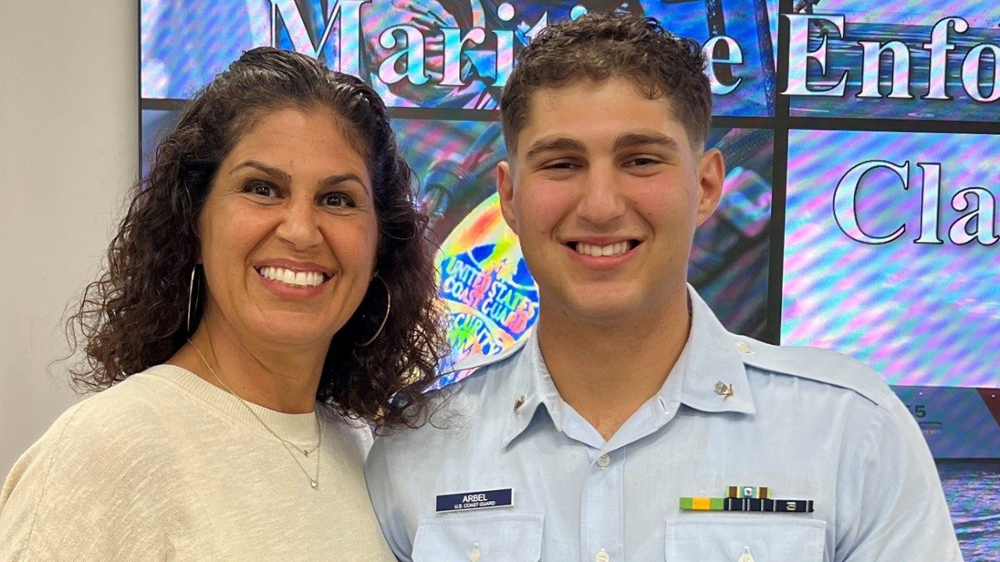

20-year breast cancer survivor: It’s never too late to volunteer at UT MD Anderson
When I was going through breast cancer treatment in 2006, I remember a volunteer coming into my room while I was receiving chemotherapy at UT MD Anderson.
She was a breast cancer survivor, someone who had already been through what I was going through. So, I wanted to be her — cancer-free, looking great and past all the treatments.
GLP-1s and anesthesia: What to know before surgery
3 reasons why an accurate bladder cancer diagnosis matters
20-year breast cancer survivor: It’s never too late to volunteer at UT MD Anderson
What is white coat syndrome?
First patient on clinical trial thankful for UT MD Anderson
Find stories by topic
Find out everything you need to know to navigate a cancer diagnosis and treatment from UT MD Anderson’s experts.
Read inspiring stories from patients and caregivers – and get their advice to help you or a loved one through cancer.
Get UT MD Anderson experts’ advice to help you stay healthy and reduce your risk of diseases like cancer.
Learn how UT MD Anderson researchers are advancing our understanding and treatment of cancer – and get to know the scientists behind this research.
Read insights on the latest news and trending topics from UT MD Anderson experts, and see what drives us to end cancer.
Find out what inspires our donors to give to UT MD Anderson, and learn how their generous support advances our mission to end cancer.